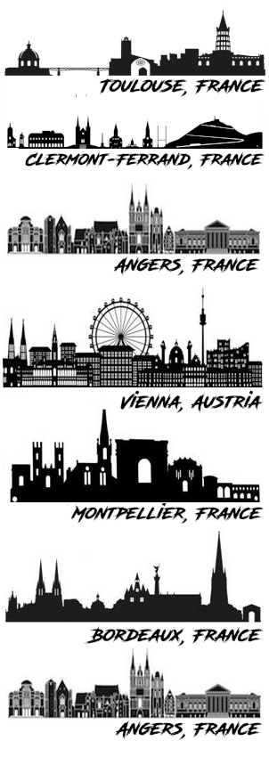
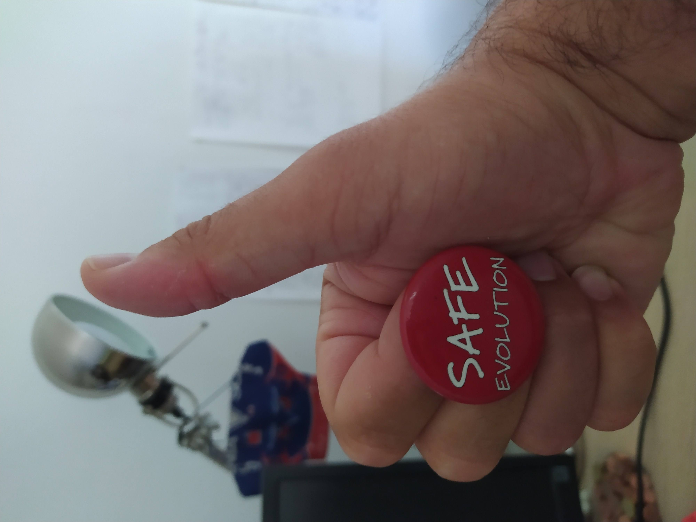

Thibault Leroy
Curriculum Vitae
2022: Habilitation (HDR), University of Angers, France - Habilitation Thesis (in French) - Defense (Video Capture, in French)
2012: PhD, University of Angers, France - PhD Thesis (in French)
2009: Master in Plant genetics & pathology (with honors), University of Angers and Agro-Campus Rennes, France
Master Thesis (in French)
2007: Licence in Biology (equivalent to a B.Sc) with distinction (giving access to French merit scholarship), University of Angers, France

2023 - present :
Permanent INRAE Researcher (CRCN) on honeybee genomics - Genetics, Physiology and Livestock Systems (GenPhySE) - INRAE Toulouse, France
2022 - 2022 :
Senior Postdoc - Genetics, Diversity and Ecophysiology of Cereals (GDEC) - UMR INRAE/Clermont Auvergne University - INRAE Clermont-Ferrand, France
2021 - 2022 :
Senior Postdoc - Research Institute of Horticulture and Seeds (IRHS) - University of Angers/INRAE, France
2019 - 2021 :
University assistant / Senior Postdoc - Plant Evolutionary Genomics & Systematics - Department of Botany and Biodiversity research - University of Vienna, Austria
2018 - 2019:
14-month postdoctoral position funded by ANR (PI - B. Nabholz), ISEM, University of Montpellier, France
2014 - 2018:
4-year postdoctoral position funded by ANR (PI C. Plomion) & ERC (PI A. Kremer), INRA Bordeaux-Pierroton, France
2009- 2013:
3-year PhD position followed by an 8-month postdoctoral position, INRA/University of Angers, France
- Local adaptation to changing environments
- Gene flow, (adaptive) introgression
- Speciation / Hybrid zones
- Mutation rates and spectra
- Footprints of natural and artificial selection
- Evolution of genomic variation within and between species
- Deleterious mutations /conservation Biology
- Methods in population genomics (demographic inferences, genome scans/GWAS, …)
- Since 2015: Individual training courses in bioinformatics (regular basis)
- 2019: courses in statistics and evolutionary biology (undergraduate level)
- 2020 - 2022: courses and practicals in population genomics (Master & PhD students, Univ. Vienna, Austria)
- 2023 - ongoing: courses in population genomics (Master students, Univ. Paul Sabatier, Toulouse, France)
- 2024 - ongoing: 1-week Physalia course to introduce pop genomics (with Yann Bourgeois) - More info: PHYSALIA WEBSITE

- I support the SAFE EVOLUTION program promoting a safe, inclusive, and professional environment in evolutionary biology.
- I also support all non-for-profit scientific invitiatives and societies allowing a free publication and an online access (open all around the world) to research articles and book, including the recent Peer Community In... initiative. More broadly, I am in favor of the sharing of all unpublished manuscripts (e.g. BioRxiv), data and code, as well as a more transparent peer-review process, including the publication of all the correspondence with the authors.
- I am fully against all individual awards and prizes, and more broadly, narcissism and megalomania in research. Good science is always collective.
- Reviewer for 30+ journals including Apidologie, Biology Letters, eLife, Evolutionary Applications, Molecular Biology & Evolution, Molecular Ecology, Molecular Ecology Resources, New Phytologist, Peer J, Peer Community In (PCI) Evolutionary Biology, PCI Genomics, Plos Genetics.
- Referee of 2 research grant applications
- Successfully supervised (or co-supervised) 9 graduate students (master degree), latest 2nd year master student co-supervised Shaan Lepaul-Picolet (2023) Univ. Bordeaux (Currently PhD student with Sophie Gerber, Univ. Bordeaux), latest fully supervised: Noémie Teixido (2024) INRAE Occitanie-Toulouse
- Co-supervisor of 3 PhD students (1 still ongoing)
- Currently member of 9 thesis monitoring committee [1 in Vienna (Austria), 1 in Cologne (Germany) and 7 in France (1 in Bordeaux, 3 in Montpellier, 1 in Toulouse, 1 in Perpignan & 1 in Rennes]
- Former member of 3 PhD defense committees (2 as a PhD thesis reviewer, 1 as an examiner)
- Member of the European Society for Evolutionary Biology (ESEB) and the International Union for the Study of Social Insects (IUSSSI, French section).
41 - Thibault Leroy, Pierre Faux, Benjamin Basso, Sonia Eynard, David Wragg & Alain Vignal. Inferring long-term and short-term determinants of genetic diversity in honey bees: Beekeeping impact and conservation strategies (avalaible on bioRxiv 2024.09.04.611184)
40 - Gil Yardeni, Michael H. J. Barfuss, Walter Till, Matthew R. Thornton, Clara Groot Crego, Christian Lexer, Thibault Leroy*, Ovidiu Paun*. The explosive radiation of the Neotropical Tillandsia subgenus Tillandsia (Bromeliaceae) has been facilitated by pervasive hybridization (avalaible on bioRxiv 2023.11.16.567341)
39 - Thibault Leroy, Elise Albert, Tatiana Thouroude, Sylvie Baudino, Jean-Claude Caissard, Annie Chastellier, Jerome Chameau, Julien Jeauffre, Therese Loubert, Saretta Nindya Paramita, Alix Pernet, Vanessa Soufflet-Freslon, Cristiana Oghina-Pavie, Fabrice Foucher, Laurence Hibrand-Saint Oyant*, Jeremy Clotault*. Dark side of the honeymoon: reconstructing the Asian x European rose breeding history through the lens of genomics (available on bioRxiv 2023.06.22.546162)
38 - Samuel Yeaman, James Whiting, Tom Booker et al. [+ 35 other authors including Thibault Leroy]. Core genes driving climate adaptation in plants. Nature Ecology & Evolution, in press (available at Research Square https://doi.org/10.21203/rs.3.rs-3434061/v1)
37 - Antoine Kremer, Adline Delcamp, Isabelle Lesur, Stefanie Wagner, Christian Rellstab, Erwan Guichoux*, Thibault Leroy*. Whole-genome screening for near-diagnostic genetic markers for white oak species identification in Europe, Annals of Forest Science, 81, 21 (avalaible on bioRxiv 2023.11.29.568959)
36 - Clara Groot Crego, Jaqueline Hess, Gil Yardeni, Marylaure de La Harpe, Clara Priemer, Francesca Beclin, Luiz A. Cauz-Santos, Sarah Saadain, Eva M. Temsch, Hanna Weiss-Schneeweiss, Michael H.J. Barfuss, Walter Till, Wolfram Weckwerth, Karolina Heyduk, Christian Lexer, Ovidiu Paun*, Thibault Leroy*. CAM evolution is associated with gene family expansion in an explosive bromeliad radiation, The Plant Cell, koae130 (available on bioRxiv, 2023.02.01.526631)
35 - Sylvain Schmitt, Patrick Heuret, Valerie Troispoux, Melanie Beraud, Jocelyn Cazal, Emilie Chancerel, Charlotte Cravero, Erwan Guichoux, Olivier Lepais, Joao Loureiro, William Marande, Olivier Martin-Ducup, Gregoire Vincent, Jerome Chave, Christophe Plomion, Thibault Leroy*, Myriam Heuertz*, Niklas Tysklind*. Low-frequency somatic mutations are heritable in tropical trees Dicorynia guianensis and Sextonia rubra. PNAS 2024, e2313312121 (available on bioRxiv 2023.06.05.543657)
34 - Maëva Gabrielli, Thibault Leroy, Jordi Salmona, Benoit Nabholz, Borja Milá*, Christophe Thébaud*. Demographic responses of oceanic island birds to local and regional ecological disruptions revealed by whole-genome sequencing. Molecular Ecology 2023, 33:e17243 (available on bioRxiv bioRxiv 2023.09.12.555930)
33 - Thibault Leroy. Re-evaluating the driving force behind mutations. eLife 2023, 12:e89706 (also available on EcoEvoRxiv https://ecoevorxiv.org/repository/view/5943/)
32 - Quentin Rougemont, Thibault Leroy, Eric B. Rondeau, Ben Koop, Louis Bernatchez. Allele surfing causes maladaptation in a Pacific salmon of conservation concern, PLOS Genetics 2023, 19(9) e1010918 (available on bioRxiv bioRxiv 2022.11.10.515805)
31 - Huiying Shang, David L Field, Ovidiu Paun, Martha Rendón-Anaya, Jaqueline Hess, Claus Vogl, Jianquan Liu, Pär K. Ingvarsson, Christian Lexer*, Thibault Leroy*. Drivers of genomic landscapes of differentiation across a Populus divergence gradient. Molecular Ecology 2023, 32:4348–4361 (https://onlinelibrary.wiley.com/doi/10.1111/mec.17034; also available on bioRxiv 2021.08.26.457771 + PCI recommendation: https://evolbiol.peercommunityin.org/articles/rec?id=488)
30 - Stefanie Wagner, Andaine Seguin-Orlando, Jean-Charles Leplé, Thibault Leroy, Céline Lalanne, Karine Labadie, Jean-Marc Aury, Sandy Poirier, Patrick Wincker, Christophe Plomion, Antoine Kremer, Ludovic Orlando. Tracking population structure and phenology through time using ancient genomes from waterlogged white oak wood. Molecular Ecology 2023, 00:1–17 (https://doi.org/10.1111/mec.16859).
29 - Sylvain Schmitt, Thibault Leroy, Myriam Heuertz, Niklas Tysklind. Somatic mutation detection in plants: a critical evaluation through simulations and reanalyses. Peer Community Journal 2022, 2:e68. (available on bioRxiv, 2021.10.11.462798)
28 - Mathilde Barthe, Claire Doutrelant, Rita Covas, Martim Melo, Juan Carlos Illera, Marie-Ka Tilak, Constance Colombier, Thibault Leroy, Claire Loiseau, Benoit Nabholz. Reduction in population size and not a shift in parasite community affect evolution of immune genes in island birds. Peer Community Journal 2022, 2:e67. (available on bioRxiv, 2021.11.21.469450)
27 - Thibault Leroy & Benoit Nabholz. Response to Kratochvíl and Rovatsos. Current Biology 2022, 32(1):PR30-R31
26 - Gil Yardeni, Juan Viruel, Margot Paris, Jaqueline Hess, Clara Groot Crego, Marylaure de La Harpe, Norma Rivera, Michael H. J. Barfuss, Walter Till, Valeria Guzmán-Jacob, Thorsten Krömer, Christian Lexer, Ovidiu Paun & Thibault Leroy. Taxon-specific or universal? Using target capture to study the evolutionary history of a rapid radiation. Molecular Ecology Resources 2022, 22:927– 945 (available on bioRxiv, 2021.05.20.444989)
25 - Dounia Saleh, Jun Chen, Jean-Charles Leplé, Thibault Leroy, Laura Truffaut, Benjamin Dencausse, Céline Lalanne, Karine Labadie, Isabelle Lesur, Didier Bert, Frédéric Lagane, François Morneau, Jean-Marc Aury, Christophe Plomion, Martin Lascoux & Antoine Kremer. Genome-wide evolutionary response of European oaks since the Little Ice Age. Evolution Letters 2022, 6(1):4–20 (available on BioRxiv, 2021.05.25.445558)
24 - Thibault Leroy, Yoann Anselmetti, Marie-Ka Tilak, Sèverine Bérard, Laura Csukonyi, Maëva Gabrielli, Céline Scornavacca, Borja Milá, Christophe Thébaud, Benoit Nabholz. A bird's white-eye view on avian sex chromosome evolution. Peer Community Journal 2021, 1:e63 (available on BioRxiv: 505610)
23 - Muhammad Ahmad, Thibault Leroy, Nikos Krigas, Eva M. Temsch, Hanna Weiss-Schneeweiss, Christian Lexer, Eva Maria Sehr & Ovidiu Paun. Spatial and ecological drivers of genetic structure in Greek Populations of Alkanna tinctoria (Boraginaeceae), a polyploid medicinal herb. Frontiers in Pant Science 2021, 12:706574 (available on BioRxiv, 2021.05.06.442843v1).
22 - Antoine Kremer, Christophe Plomion, Thibault Leroy, Hermine Alexandre, Laure Truffaut, Sylvain Delzon, Alexis Ducousso, Brigitte Musch, Jose Manuel Torres Ruiz, Stefanie Wagner. Evolution passée et contemporaine des chênes. Revue forestière française 2020, 72(4):297-318 (available on hal, hal-03206333, in French).
21 - Thibault Leroy, Marjolaine Rousselle, Marie-Ka Tilak, Aude Caizergues, Céline Scornavacca, Maria Recuerda Carrasco, Jérôme Fuchs, Juan Carlos Illera, Dawie H. De Swardt, Christophe Thébaud, Borja Milà & Benoit Nabholz. Endemic island songbirds as windows into evolution in small effective population sizes, Current Biology 2021,31(6):1303-1310 (available on BioRxiv, 2020.04.07.030155).
20 - Thibault Leroy & Quentin Rougemont. Book chapter: Introduction to population genomics methods. In: Molecular Plant Taxonomy. 2020. Publisher website - Ask for a private copy
19 - Quentin Rougemont, Jean-Sébastien Moore, Thibault Leroy, Eric Normandeau, Eric B. Rondeau, Ruth E. Withler, Donald M. Van Doornik, Penelope A. Crane, Kerry A. Naish, John Carlos Garza, Terry D. Beacham, Ben F. Koop & Louis Bernatchez. Demographic history shaped geographical patterns of deleterious mutation load in a broadly distributed Pacific Salmon. Plos Genetics. 2020. Available on bioRxiv (732750).
18 - Maëva Gabrielli, Benoit Nabholz, Thibault Leroy, Borja Milá, Christophe Thébaud. Within-island diversification in a passerine bird. Proceedings of the Royal Society B. 2020
17 - Thibault Leroy, Jean-Marc Louvet, Céline Lalanne, Grégoire Le Provost, Karine Labadie, Jean-Marc Aury, Sylvain Delzon, Christophe Plomion & Antoine Kremer. Adaptive introgression as a driver of local adaptation to climate in European white oaks. New Phytologist 2020; 226: 1171-1182 (special issue: oak genomics).
16 - Thibault Leroy, Quentin Rougemont, Jean-Luc Dupouey, Catherine Bodénès, Céline Lalanne, Caroline Belser, Karine Labadie, Grégoire Le Provost, Jean-Marc Aury, Antoine Kremer, Christophe Plomion: Massive postglacial gene flow between European white oaks uncovered genes underlying species barriers. New Phytologist 2020, 226: 1183-1197 (special issue: oak genomics).
15 - Thibault Leroy, Antoine Kremer & Christophe Plomion. Oak symbolism in the light of genomics. New Phytologist, 2020; 226:1012–1017 (special issue: oak genomics).
14 - Caroline Pont*, Thibault Leroy*, Michael Seidel*, Alessandro Tondelli*, Wandrille Duchemin*; David Armisen*; Daniel Lang*, Daniela Bustos-Korts*, Nadia Goué, Francçois Balfournier, Marta-Molnar-Lang, Jacob Lage [+20 co-authors including the WHEALBI consortium]: Tracing the ancestry of modern bread wheats. Nature Genetics 05/2019; 51 (5): 905
13 - Gerald. A. Tuskan; Andrew T. Groover, Jeremy Schmutz, Stephen Paul DiFazio, Alexender Myburg, Dario Grattapaglia, Lawrence B. Smart, Tongming Yin, Jean-Marc Aury, Antoine Kremer, Thibault Leroy, [+9 co-authors] Hardwood Tree Genomics: Unlocking Woody Plant Biology. Frontiers in Plant Science. 12/2018, 9(1799)
12 - Monika Michalecka, Sylwester Masny, Thibault Leroy, Joanna Puławska: Population structure of Venturia inaequalis, a causal agent of apple scab, in response to heterogeneous apple tree cultivation. BMC Evolutionary Biology 12/2018; 18(1):5
11 - Christophe Plomion*, Jean-Marc Aury*, Joelle Amselem*, Thibault Leroy‡, Florent Murat‡, Sébastien Duplessis, Sébastien Faye, Nicolas Francillonne, Karine Labadie, Grégoire Le Provost [+56 other co-authors]: Oak genome reveals facets of long lifespan. 05/2018 Nature Plants, 4(7)
10 - Stefanie Wagner, Frédéric Lagane, Andaine Seguin-Orlando, Mikkel Schubert, Thibault Leroy, Erwan Guichoux, Emilie Chancerel, Inger Bech-Hebelstrup, Vincent Bernard, Cyrille Billard [+25 other coauthors]: High-Throughput DNA sequencing of ancient wood. Molecular Ecology 02/2018; 27(5)
9 - Nastasia R. Merceron, Thibault Leroy, Emilie Chancerel, Jeanne Romero-Severson, Daniel S. Borkowski, Alexis Ducousso, Arnaud Monty, Annabel J. Porté, Antoine Kremer: Back to America: Tracking the origin of European introduced populations of Quercus rubra L.. Genome 07/2017; 60(9)
8 - Thibault Leroy, Camille Roux, Laure Villate, Catherine Bodénès, Jonathan Romiguier, Jorge A P Paiva, Carole Dossat, Jean-Marc Aury, Christophe Plomion, Antoine Kremer: Extensive recent secondary contacts between four European white oak species. New Phytologist 01/2017; 214(2)
7 - Thibault Leroy, Valérie Caffier, Jean-Marc Celton, Nicolas Anger, Charles-Eric Durel, Christophe Lemaire, Bruno Le Cam: When virulence originates from nonagricultural hosts: Evolutionary and epidemiological consequences of introgressions following secondary contacts in Venturia inaequalis. New Phytologist 02/2016
6 - Christophe Lemaire, Marie De Gracia, Thibault Leroy, Monika Michalecka, Hanne Lindhard-Pedersen, Fabien Guerin, Pierre Gladieux, Bruno Le Cam: Emergence of new virulent populations of apple scab from nonagricultural disease reservoirs. New Phytologist 09/2015; 209(3)
5 - Christophe Plomion, Jean-Marc Aury, Joëlle Amselem, Tina Alaeitabar, Valérie Barbe, Caroline Belser, Hélène Bergès, Catherine Bodénès, Nathalie Boudet, Christophe Boury, [30 other authors including Thibault Leroy]: Decoding the oak genome: Public release of sequence data, assembly, annotation and publication strategies. Molecular Ecology Resources 05/2015; 16(1)
4 - Thibault Leroy, Bruno Le Cam, Christophe Lemaire: When virulence originates from non-agricultural hosts: New insights into plant breeding. Infection, genetics and evolution: journal of molecular epidemiology and evolutionary genetics in infectious diseases 01/2014; 27., DOI:10.1016/j.meegid.2013.12.022
3 - Thibault Leroy, Christophe Lemaire, Frank Dunemann, Bruno Le Cam: The genetic structure of a Venturia inaequalis population in a heterogeneous host population composed of different Malus species. BMC Evolutionary Biology 03/2013; 13(1):64
2- Aymeric Joubert, Nelly Bataille-Simoneau, Claire Campion, Thomas Guillemette, piétrick Hudhomme, Béatrice Iacomi-Vasilescu, Thibault Leroy, Stéphanie Pochon, Pascal Poupard, Philippe Simoneau: Cell wall integrity and high osmolarity glycerol pathways are required for adaptation of Alternaria brassicicola to cell wall stress caused by brassicaceous indolic phytoalexins. Cellular Microbiology 01/2011; 13(1):62-80
1- Pierre Gladieux, Xiu-Guo Zhang, Isabel Róldan-Ruiz, Valérie Caffier, Thibault Leroy, Martine Devaux, Sabine Van Glabeke, Els Coart, Bruno Le Cam: Evolution of the population structure of Venturia inaequalis, the apple scab fungus, associated with the domestication of its host. Molecular Ecology 02/2010; 19(4):658-74
Press Release from INRAE France: Myriam Heuertz, Niklas Tysklind, Thibault Leroy, Sylvain Schmitt: "Unveiling rare diversity: the origin of heritable mutations in trees". February 2024 Press release here (in English) (a version in French is also available here)
Article: Thibault Leroy, Myriam Heuertz, Niklas Tysklind, Sylvain Schmitt: "Une nouvelle étude décortique l’origine des mutations génétiques". The conversation France. February 2024. Article here (in French) (extended version available here (in French))
Article: Antoine Kremer, Christophe Plomion & Thibault Leroy: "Changement climatique : la diversité génétique à l’origine de l’adaptation des arbres ?". The conversation France. May 2023. Article here (in French)
Press Release from INRAE France: "Vers une nouvelle histoire des forêts : les génomes de bois anciens commencent enfin à délivrer leurs secrets" https://www.inrae.fr/actualites/nouvelle-histoire-forets-genomes-bois-anciens-commencent-enfin-delivrer-leurs-secrets, 8 February 2023
Press Release from INRAE France: "Détecter les mutations des arbres à l’aide d’une méthode utilisée en médecine humaine" https://www.inrae.fr/actualites/detecter-mutations-arbres-laide-dune-methode-utilisee-medecine-humaine, 28 November 2022
Conference: Thibault Leroy: "Introgression et adaptation chez les chênes blancs européens", seminar for field technicians and engineers of the French National Forests Office (ONF), 29 September 2022
Conference: Sophie Gerber & Thibault Leroy: Arbres et forêts, entre corps et cœurs. Public conference at festival des Arts foreztiers, Chavaniac-Lafayette, France, 24 August 2022. https://lesartsforeztiers.eu/
Article: Thibault Leroy & Sophie Gerber: "Arbres et forêts, entre corps et cœurs". The conversation France. December 2021. Article here (in French) (republished on the website of the French newspaper journal "20 minutes" here (in French))
Thibault Leroy "Heterogeneous landscapes of genetic diversity in honey bees". 18 December 2023. CIRAD, Montpellier, France (Seminar)
Thibault Leroy "Genetic diversity and mutation load in passerine birds and honey bees". 15 May 2023. Uppsala University, Sweden (Seminar)
Thibault Leroy "Somatic mutation detection and inheritance in plants". 24 November 2022. University of Gôttingen, Germany (Webinar)
Thibault Leroy "Reproductive isolation and adaptive introgression in European white oaks". 25 October 2022. BFW Vienna, Austria (Webinar) Video capture of the webinar
Thibault Leroy "Detection of footprints of natural or artificial selection in genomes". 29 September 2022. GDEC Thursdays seminar series,
Thibault Leroy "Somatic mutation inheritance in plants: simple hypotheses, complex early findings". 9 September 2022. University of Lille, France (Seminar) Video capture of the seminar
I am a population geneticist, employed as permanent researcher (CRCN) at INRAE, Toulouse, France. My research is focused on the study of evolutionary forces: gene flow, drift, mutation and selection and their relative importance in divergence and speciation. My main model is honey bees but I continue to work on some other models through collaborations, including some models I studied over the last decade (plants: oaks, cereals, Populus, Bromeliads etc; animals: passerine birds, salmon etc). My interests also include genomics - in its broader sense - and statistical methods for population genetics.